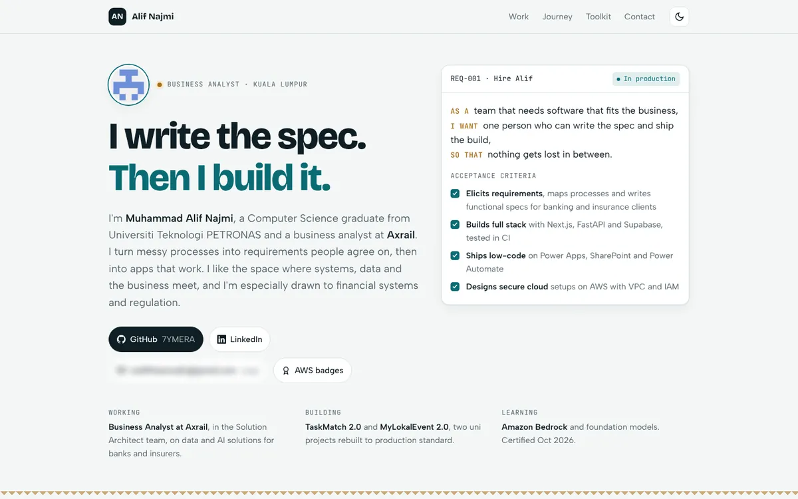
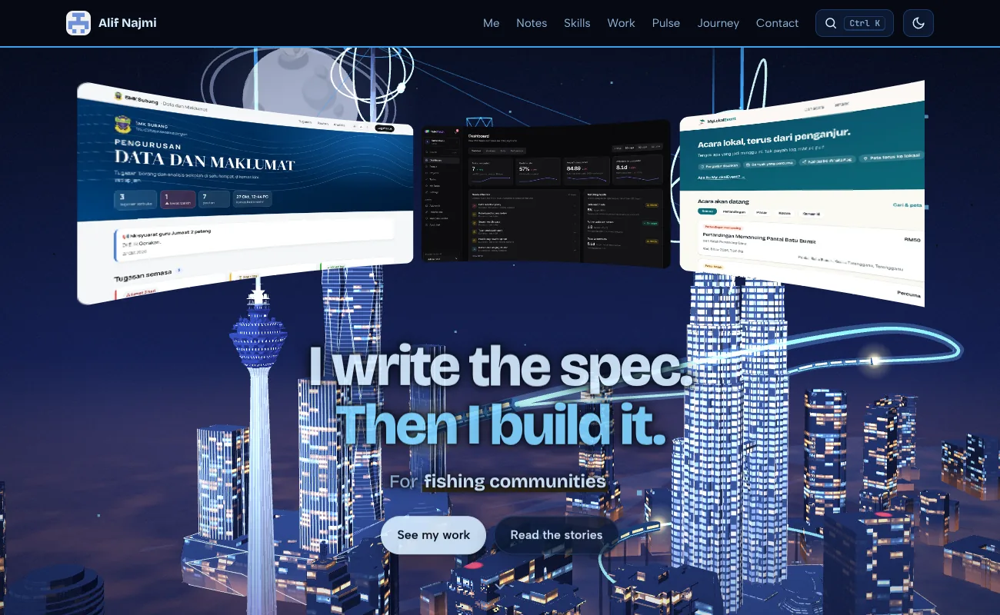
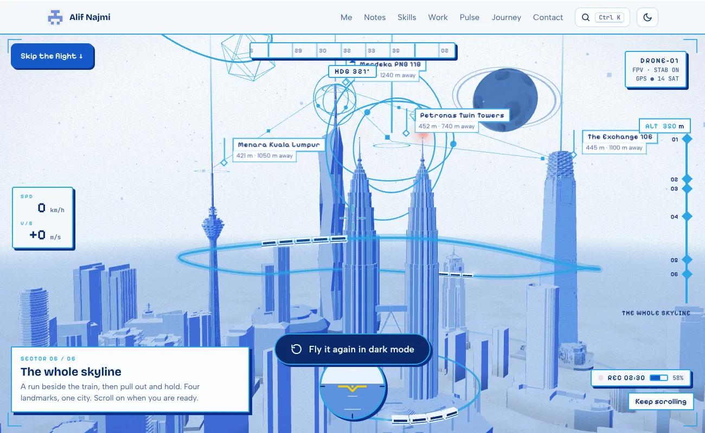
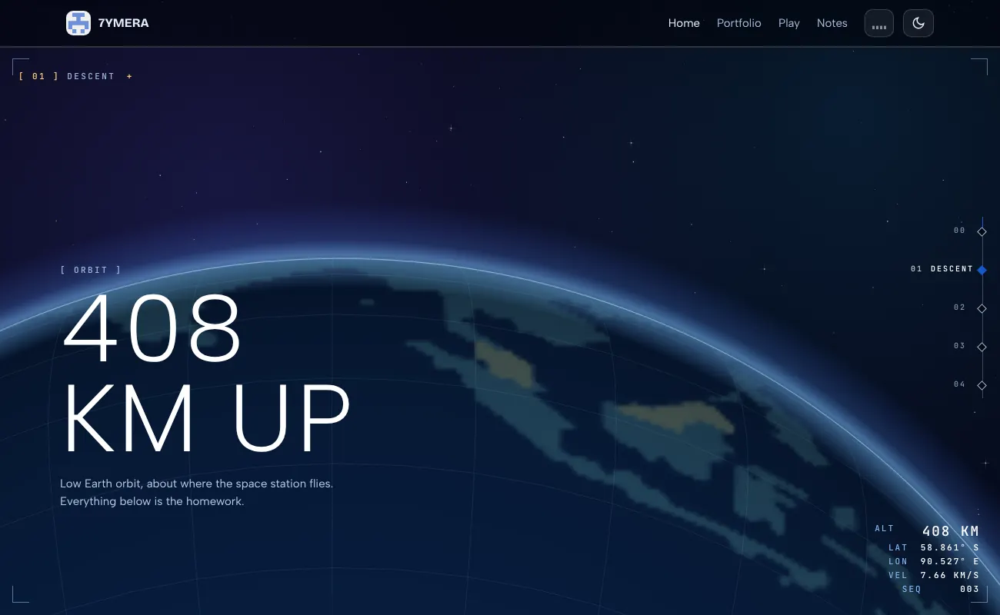
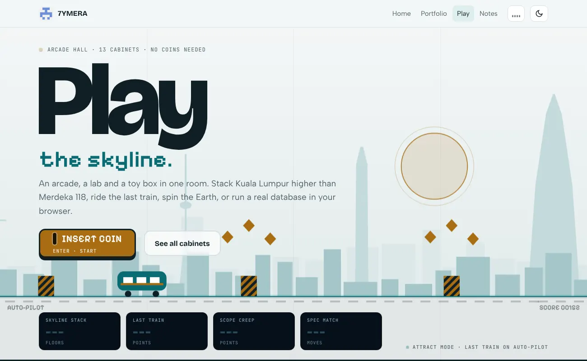

This site is the project I have touched most. It started on 25 October 2026 as one static page, and four weeks and a few hundred commits later it is a 3D Kuala Lumpur you fall into from orbit, a portfolio for recruiters, a room of games, and these notes. It is still plain HTML, CSS and JavaScript on GitHub Pages: no framework, no build step, nothing to install. You edit a file, push, and it is live in a minute.
Version 1: one page
The first version was a manifesto, a "REQ-001 · Hire Alif" user-story card, three case studies and a timeline, in teal and gold. Over the next two weeks it grew a curtain opening, an aurora behind everything, glass folders for each project, a coverflow of my UTP subjects and live SQL playgrounds you can run in the browser.

Version 2: the city becomes the site
On 10 November the experiment I had been running on the side, a low-poly KL skyline, took over the home page. The Petronas Towers, Merdeka 118, Menara KL and The Exchange 106 are real models; the rest of the city comes from OpenStreetMap. Every section of the page got its own camera shot, and the end of the page became a drone flight through the skyline. Night is lit from photos of the real city: scattered warm and cool windows, a warm haze on the horizon.


Version 3: three pages and a time of day
By 20 November the one long page did too much. So it split: a front page that is a short film (a liquid glass logo, a fall from 408 km up into the city, the flight, a deck of projects), a portfolio that gets a recruiter to the point in thirty seconds, and a play page with the games and labs. The city got a real time of day. You can fly it by day, at golden hour or at night, and scrolling the portfolio turns the day into dusk. A composed soundtrack plays underneath if you switch it on.



What I learned
- Frame rate is a feature. Animate only transform and opacity, pause anything off screen, and measure with the CPU slowed down four times. Golden hour was taken out once because it stuttered on phones, and only came back when it could be done with a handful of shader values instead of repainting every material.
- Port, don't install. The components I liked on 21st.dev are React. Each one here is rewritten in plain JavaScript, so the site never needs a build.
- Write the handoff as you go. Most of this was built with AI agents. A short CLAUDE.md, a work log with what changed and what is still open, and a smoke test that checks every page at desktop and phone width are what kept it coherent.
- Privacy is a rule, not a step. No client names, nobody else's name or ID in a screenshot, and any database published here is scrubbed first.
The code is on GitHub, and the README has the full version history.